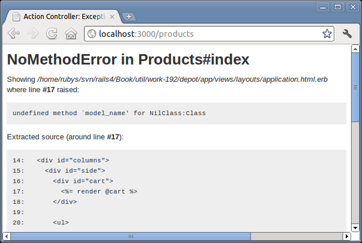

We look at the test failures, and we see a number of errors that look like the following:
ActionView::Template::Error: undefined method `line_items' for nil:NilClass |
Since this error represents the majority of the problems reported, let’s address it first so that we can focus on the rest. According to the test, we will have a problem if we get the product index, and sure enough, when we point our browser to http://localhost:3000/products/, we see Figure 21, An error in a layout can affect the entire application..
|  |
|
Figure 21. An error in a layout can affect the entire application. |
This information is very helpful. The message identifies the template file was being processed at the point where the error occurs (app/views/layouts/appli-cation.html.erb), the line number where the error occurred, and an excerpt from the template of lines around the error. From this, we can see that the expression being evaluated at the point of error is @cart.line_items, and the message produced is undefined method ‘line_items’ for nil.
So, @cart is apparently nil when we display an index of our products. That makes sense, because it is set only in the store controller. This is easy enough to fix; all we need to do is avoid displaying the cart at all unless this value is set:
| rails31/depot_o/app/views/layouts/application.html.erb | |
| * | <% if @cart %> |
<%= hidden_div_if(@cart.line_items.empty?, id: 'cart') do %> |
|
<%= render @cart %> |
|
<% end %> |
|
| * | <% end %> |
After this fix, we rerun the tests again and see that we are down to one error. The value of the redirect was not what was expected. This occurred on creating a line item. Sure enough, we did change that on Changing the Flow. Unlike the last change, which was entirely accidental, this change was intentional, so we update the corresponding functional test case:
| rails31/depot_o/test/functional/line_items_controller_test.rb | |
test "should create line_item" do |
|
assert_difference('LineItem.count') do |
|
post :create, product_id: products(:ruby).id |
|
end |
|
| * | assert_redirected_to store_path |
end |
|
With this change in place, our tests now once again pass. Just imagine what could have happened. A change in one part of an application in order to support a new requirement breaks a function we previously implemented in another part of the application. If you are not careful, this can happen in a small application like Depot. Even if you are careful, this will happen in a large application.
But we are not done yet. We haven’t tested any of our Ajax additions, such as what happens when we click the Add to Cart button. Rails makes that easy too.
We already have a test for should create line item, so let’s add another one called should create line item via ajax:
| rails31/depot_o/test/functional/line_items_controller_test.rb | |
test "should create line_item via ajax" do |
|
assert_difference('LineItem.count') do |
|
xhr :post, :create, product_id: products(:ruby).id |
|
end |
|
assert_response :success |
|
assert_select_jquery :html, '#cart' do |
|
assert_select 'tr#current_item td', /Programming Ruby 1.9/ |
|
end |
|
end |
|
This test differs in the name of the test, in the manner of invocation from the create line item test (xhr :post vs. simply post, where xhr stands for the XMLHttpRequest mouthful), and in the expected results. Instead of a redirect, we expect a successful response containing a call to replace the HTML for the cart, and in that HTML we expect to find a row with an id of current_item with a value matching Programming Ruby 1.9. This is achieved by applying the assert_select_jquery to extract the relevant HTML and then processing that HTML via whatever additional assertions you want to apply.
Finally, there is the CoffeeScript that we introduced. While testing code that actually executes in the browser is outside the scope of this book, we should test that the markup that this script depends on is in place. And it is certainly easy enough:
| rails31/depot_o/test/functional/store_controller_test.rb | |
test "markup needed for store.js.coffee is in place" do |
|
get :index |
|
assert_select '.store .entry > img', 3 |
|
assert_select '.entry input[type=submit]', 3 |
|
end |
|
This way, should an exuberant web designer change the markup on the page in a way that affects our logic, we will be alerted to this issue and be able to make a change before the code goes into production. Note that :submit is a jQuery-only extension to CSS; we simply need to spell out input[type=submit] in our test.
Keeping tests up-to-date is an important part of maintaining your application. Rails makes this easy to do. Agile programmers make testing an integral part of their development efforts. Many even go so far as to write their tests first, before the first line of code is written.
In this iteration, we added Ajax support to our cart:
We moved the shopping cart into the sidebar. We then arranged for the create action to redisplay the catalog page.
We used remote: true to invoke the LineItemsController.create action using Ajax.
We then used an ERb template to create JavaScript that will execute on the client. This script made use of jQuery in order to update to the page with just the cart’s HTML.
To help the user see changes to the cart, we added a highlight effect, using the jQuery-UI library.
We wrote a helper method that hides the cart when it is empty, and used jQuery to reveal it when an item is added.
We wrote a test that verifies not only the creation of a line item but also the content of the response that is returned from such a request.
The key point to take away is the incremental style of Ajax development. Start with a conventional application, and then add Ajax features, one by one. Ajax can be hard to debug: by adding it slowly to an application, you make it easier to track down what changed if your application stops working. And, as we saw, starting with a conventional application makes it easier to support both Ajax and non-Ajax behavior in the same codebase.
Finally, we’ll give you a couple of hints. First, if you plan to do a lot of Ajax development, you’ll probably need to get familiar with your browser’s JavaScript debugging facilities and with its DOM inspectors, such as Firefox’s Firebug, Internet Explorer 8’s Developer Tools, Google Chrome’s Developer Tools, Safari’s Web Inspector, or Opera’s Dragonfly. And, second, the NoScript plug-in for Firefox makes checking JavaScript/no JavaScript a one-click breeze. Others find it useful to run two different browsers when they are developing—with JavaScript enabled in one and disabled in the other. Then, as new features are added, poking at it with both browsers will make sure your application works regardless of the state of JavaScript.
Here’s some stuff to try on your own:
The cart is currently hidden when the user empties it by redrawing the entire catalog. Can you change the application to use the jQuery UI blind effect instead?
Add a button next to each item in the cart. When clicked, it should invoke an action to decrement the quantity of the item, deleting it from the cart when the quantity reaches zero. Get it working without using Ajax first, and then add the Ajax goodness.
(You’ll find hints at http://www.pragprog.com/wikis/wiki/RailsPlayTime.)